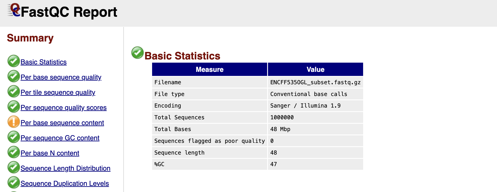
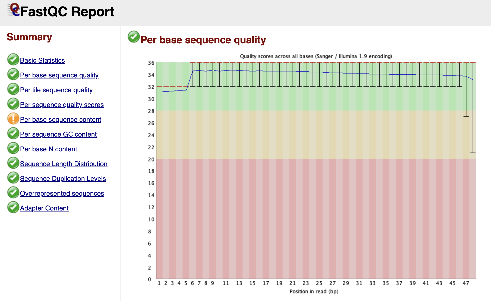
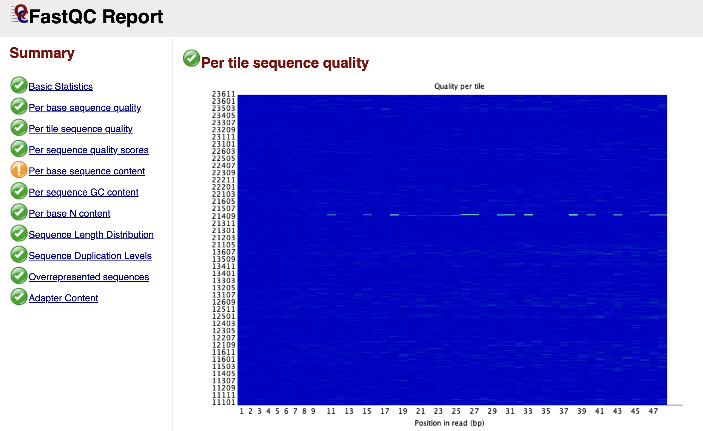
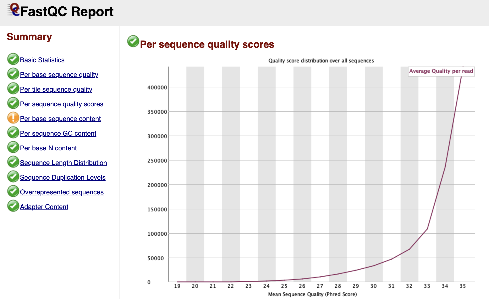
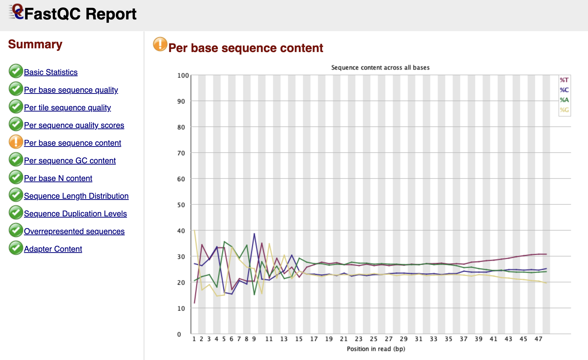
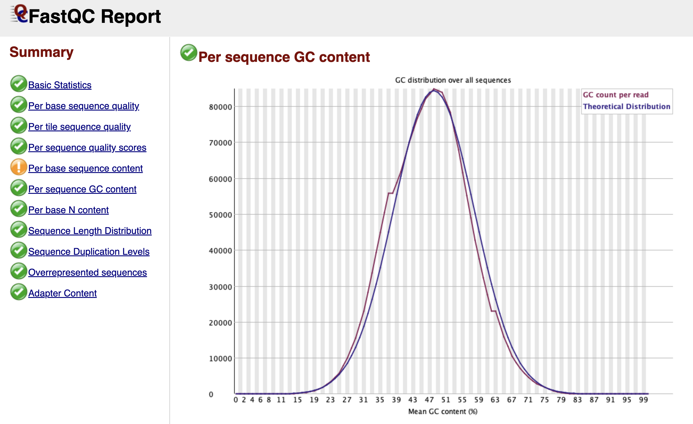
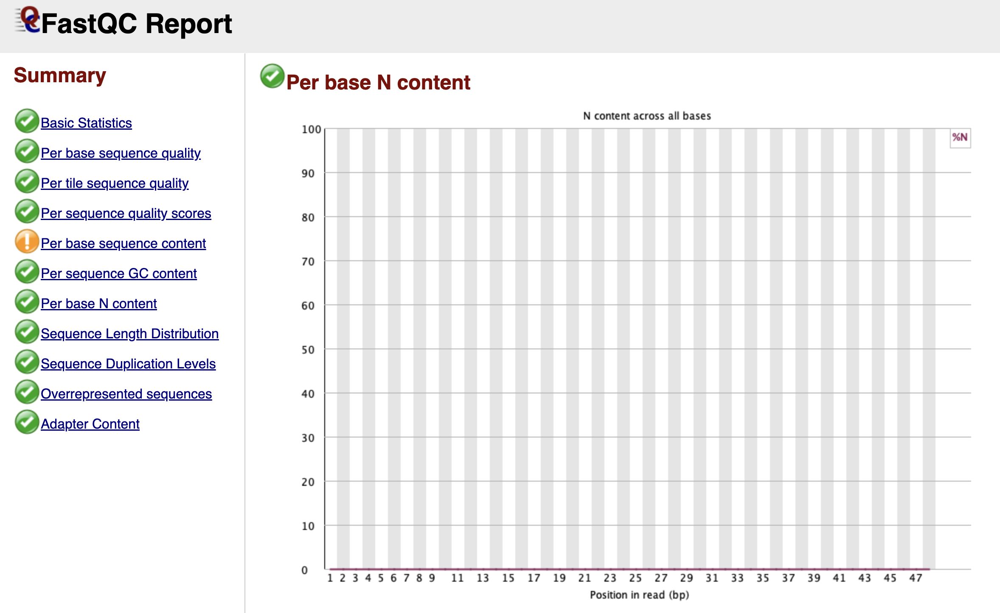
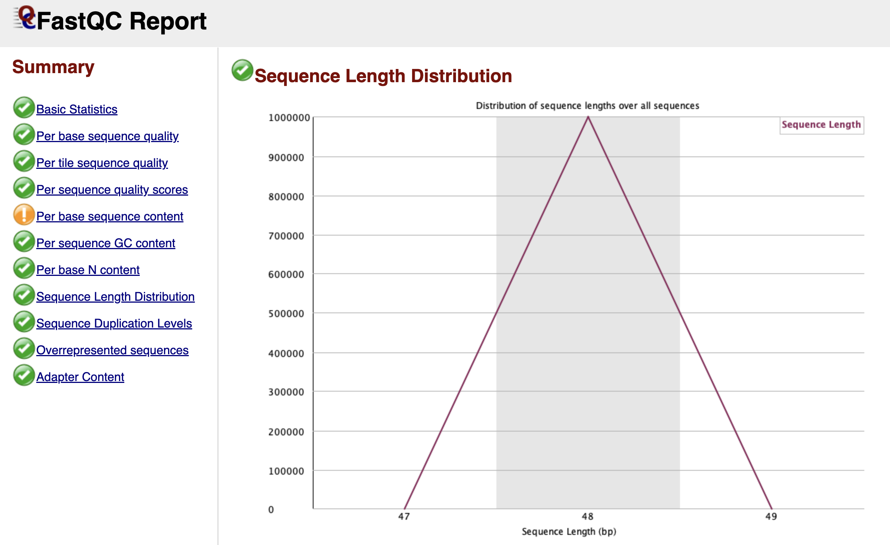
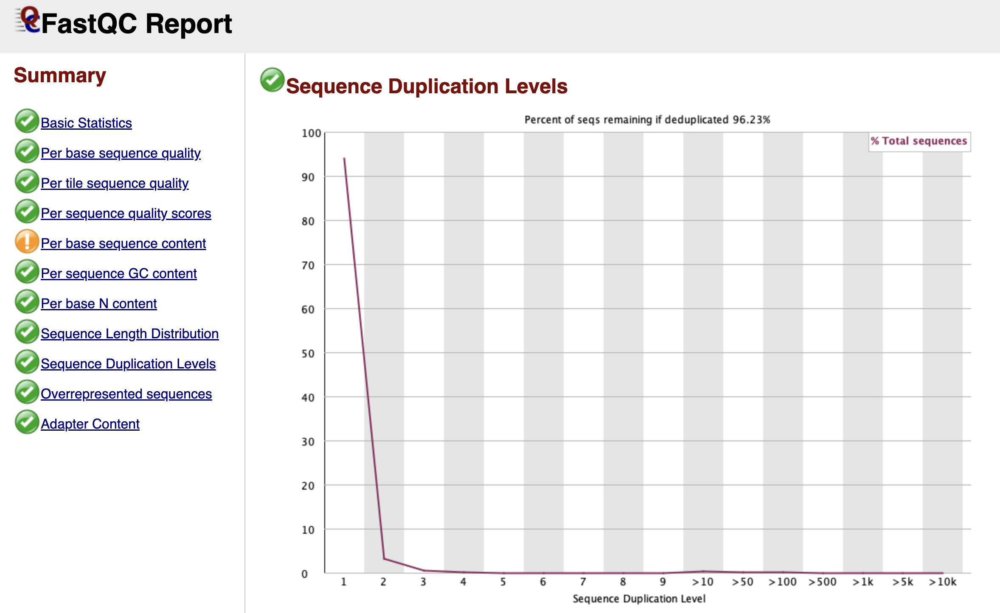
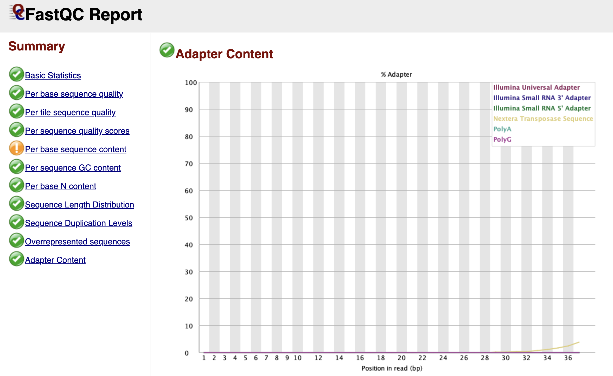

Chapter 5: FASTQC Results
Interpreting FastQC Results
Learning Objectives
By the end of this chapter, you will be able to:
- Navigate the FastQC HTML report and interpret its key summary statistics.
- Distinguish between sequencing chemistry degradation and biological signal artifacts.
- Analyze base quality scores to assess the reliability of your sequencing run.
- Identify specific ATAC-seq signatures, such as Tn5 bias, that appear as "failures" in standard reports.
- Detect adapter contamination that requires downstream cleaning.
Basic Statistics

Figure: FastQC Basic Statistics Table.
Once you open your FastQC HTML report, the first thing you encounter is the Basic Statistics table. Think of this as the "vital signs" of your dataset. It confirms that you are looking at the correct file and gives you a high-level overview of the sequencing run.
You will see the Filename and the Total Sequences, which tells you exactly how many reads are in your file (in our subsampled case, this should match the number of reads we extracted). The Sequence Length is particularly important; for raw Illumina data, this is usually a single number (e.g., 51 or 150 bp), representing the number of cycles the machine ran. Finally, the %GC gives you the overall proportion of Guanine and Cytosine bases. In a standard mouse or human genome, this roughly reflects the organism's biology, but a drastic deviation here could hint at contamination from a different species or bacteria.
Per Base Sequence Quality

Figure: FastQC Per Base Sequence Quality Graph.
Scrolling down, you arrive at one of the most important graphs: Per Base Sequence Quality. This plot is essentially a timeline of the sequencing run from the first base (left) to the last base (right).
Imagine the sequencer reading a DNA fragment. As it progresses, the chemical reagents slowly degrade, and the cluster of DNA molecules on the flow cell might lose coherence. Consequently, the machine becomes less confident in its ability to call a "G" a "G" as the read gets longer.
FastQC visualizes this confidence using a "Box and Whisker" plot. The y-axis represents the Phred Quality Score—a logarithmic score where higher is better.
- Green Zone (Score > 28): High confidence. The probability of an error is tiny.
- Orange Zone (Score 20-28): Reasonable quality, but use caution.
- Red Zone (Score < 20): Poor quality. The machine was guessing.
In a healthy dataset, you want to see the yellow boxes (representing the spread of quality scores) staying firmly in the green zone. It is entirely normal for the quality to dip slightly into the orange zone at the very end of the read—this is just the sequencing chemistry running out of steam. However, if you see the quality crash into the red zone halfway through, it indicates a severe problem with the sequencing run itself, such as bubbles in the flow cell.
Per Tile Sequence Quality

Figure: FastQC Per Tile Sequence Quality Graph.
While the previous graph looked at the time component of the run, the Per Tile Sequence Quality graph looks at the physical component. Illumina sequencing takes place on a glass slide called a flow cell, which is divided into tiny regions called tiles.
This graph is a heat map. A perfect run would be completely blue, indicating that every tile performed about the same as the average. If you see bright red spots or streaks, it means specific physical locations on the flow cell had issues—perhaps a smudge on the lens, an air bubble, or a blockage in the fluidics. While you cannot fix these physical errors computationally, identifying them explains why some reads might be poor quality.
Per Sequence Quality Scores

Figure: FastQC Per Sequence Quality Scores Graph.
While the "Per Base" graph showed us the average quality at each position, the Per Sequence Quality Scores graph looks at individual reads as a whole. It asks: "What is the average quality score of Read 1, then Read 2, and so on?"
We expect to see a sharp peak on the far right side of the graph, indicating that the vast majority of your reads have a high average quality. If you see a second peak appearing on the left side (a "bi-modal" distribution), it suggests that a specific subset of your library failed. This is often caused by a physical issue, like a bad tile on the flow cell, which ruined a specific batch of reads while leaving the rest untouched.
Per Base Sequence Content

Figure: FastQC Per Base Sequence Content Graph.
This is the module that causes the most confusion for biologists working with ATAC-seq data. In a theoretically perfect, random DNA library, the lines for A, C, G, and T should run parallel to each other across the graph, each hovering around 25%.
However, in your report, you will likely see a dramatic "failure" here. The lines for A, C, G, and T will likely swing wildly up and down for the first 9 to 12 base pairs before settling down. FastQC flags this as an error because it assumes your library was created randomly.
But remember, we used Tn5 transposase to cut our DNA. This enzyme is not perfectly random; it has a specific sequence preference where it binds and cuts. Since every read starts exactly at a cut site, the beginning of every read reflects the enzyme's preference, not the genome's sequence. This is a biological artifact, not a technical error. You should ignore this warning and definitely not trim these bases, as they mark the precise start of open chromatin.
Per Sequence GC Content

Figure: FastQC Per Sequence GC Content Graph.
This graph checks if your library looks like the organism you think you sequenced. FastQC creates a theoretical "Bell Curve" (normal distribution) based on the GC content it observes in your data.
In a clean library, the blue line (your data) should perfectly trace the red line (theoretical distribution). If you see a sharp, unnatural spike sticking out of the smooth curve, it usually indicates a specific contaminant—like adapter dimers (adapters bound to each other with no biology in between). If you see a broad "shoulder" or a second hump in the curve, it might mean your sample is contaminated with another species (like bacteria) that has a completely different GC content than a mouse.
Per Base N Content

Figure: FastQC Per Base N Content Graph.
When the sequencer is completely unsure what nucleotide is at a specific position, it doesn't guess A, C, T, or G. Instead, it assigns an "N" (for "None" or "Any").
This graph tracks the percentage of "N" calls at each position. Ideally, this line should be flat and near zero. If you see a spike where the "N" content rises above 5% or 20%, it suggests the machine lost the signal entirely at that cycle. This often happens near the end of reads or if the library sequence composition is so biased that the camera cannot distinguish the color signals.
Sequence Length Distribution

Figure: FastQC Sequence Length Distribution Graph.
For raw Illumina data, this graph is usually very boring: a single vertical peak at the cycle length (e.g., 51 bp). This simply confirms that every read coming off the machine is the same length.
However, if you are analyzing data that has already been trimmed by a facility or colleague, you might see a spread of lengths. This graph becomes much more interesting after we perform our own trimming in the next chapter, where it will confirm that we have successfully removed adapters.
Sequence Duplication Levels

Figure: FastQC Sequence Duplication Levels Graph.
Bioinformatics relies on diversity. We want to sequence millions of unique DNA molecules to get a representative map of the genome. However, during the library preparation, we use PCR to amplify our DNA. Sometimes, this process creates too many copies of the exact same fragment, known as PCR Duplicates.
This graph tracks how many times each unique sequence appears.
- The Blue Line: Represents your full library.
- The Red Line: Represents what the library would look like if we deleted the duplicates.
In a diverse library, both lines should stay high on the left side (meaning most sequences appear only once). If you see the blue line spiking on the right side, it means you have highly duplicated sequences.
In ATAC-seq, a certain level of duplication is natural because we are sequencing specific open regions ("piling up" on peaks). However, extremely high duplication usually indicates technical "over-amplification" (too many PCR cycles), meaning we are just sequencing the same molecule over and over again, wasting money and data capacity.
Adapter Content

Figure: FastQC Adapter Content Graph.
Finally, we arrive at the Adapter Content graph—the most actionable part of the report for our next step.
This graph looks for the specific "barcode" sequences used by Illumina adapters. If your DNA fragments were short, the machine may have read all the way through the biology and into the adapter on the other side. You will see this as a line (often labeled "Nextera Transposase Sequence" for ATAC-seq) that starts at 0% and slowly rises as you get towards the end of the read length.
Even if this line only reaches 2% or 5%, it is a problem. These artificial sequences will prevent your reads from aligning to the mouse genome. Seeing a rise in this graph is the "Green Light" that tells us we must perform adapter trimming.
Now that we have diagnosed the issue—adapter contamination—we are ready to move to the next chapter and fix it.